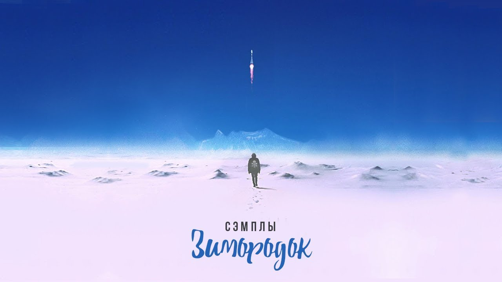

Horus Луперкаль

Биография
Horus, также известный под псевдонимом Денис Луперкаль — российский хип-хоп-исполнитель.
С 2011 по 2014 являлся участником группы Проект Увечье, в составе которой записал три студийных альбома.
Родился 23 мая 1983 года в Киеве, УССР, СССР. В пятилетнем возрасте вместе с семьей переехал в Чебоксары.
В конце 90-х заинтересовался хип-хопом, создал свой первый коллектив — группу «Стимул», в составе которой записал один альбом.
С 2002 года по 2004 проходил службу в армии на Кавказе. После, переехал в Москву, занимался оформлением музыкальных альбомов
различных хип-хоп-исполнителей. В то же время Луперкаль вернулся к музыкальному творчеству.
Музыка
После роспуска коллектива Проект Увечье, занялся сольным творчеством, выпустив четыре альбома — «Дом тысячи сквозняков» (2015),
«Прометей роняет факел» (2018), «Рифмономикон» (2019) и «Вопрос времени» (2020). Начав с ультраправого хип-хопа
Луперкаль постепенно дистанцировался от политической и социальной тематики, перейдя к рассмотрению в своей музыке
личностных проблем.
Творчество
рэпер Horus, известен не только интересными треками со множеством отсылок и глубоким моральным посылом, но и своими рисунками.
помимо музыки, занимался дизайном и успел поработать над обложками для альбомов таких исполнителей как Смоки Мо, Каста, ATL,
Энди Картрайта.
Признаться, рисунки Дениса в плане душевности не уступают его музыкальному творчеству. Некоторые работы являются отсылкам
к знаменитым фильмам ("Королевская битва", "Эквилибриум"), а некоторые рисунки достаточно четко отражают нашу суровую действительность.
Эти и другие рисунки можно увидеть на его страницах в социальных сетях
Official
На сайте использована информация из открытых источников. Создано "Lё" в 2022 году. Школа
MCS